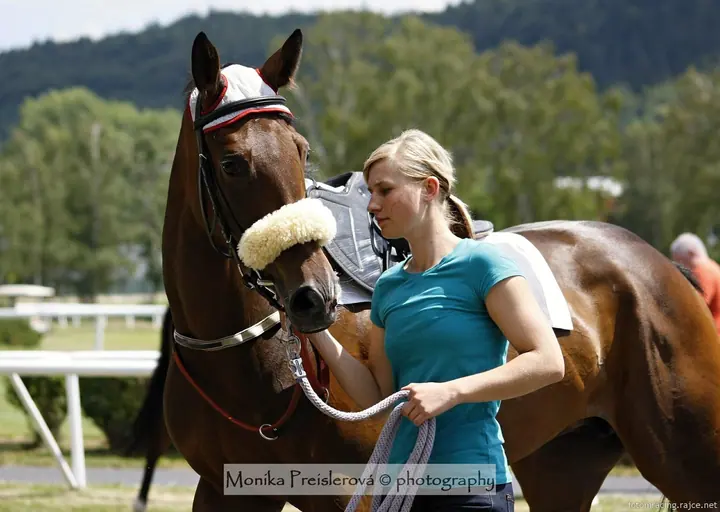
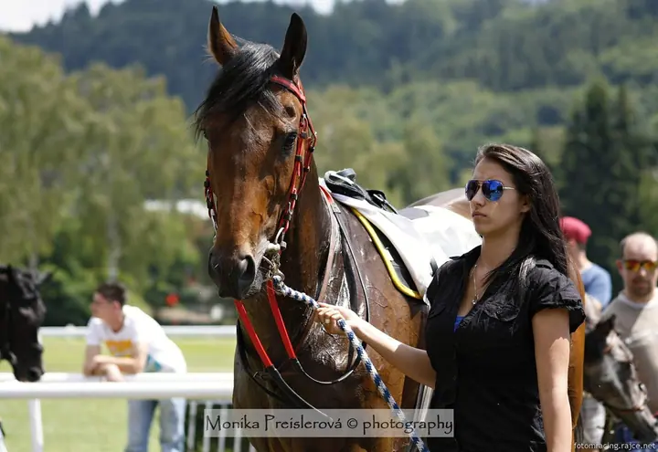
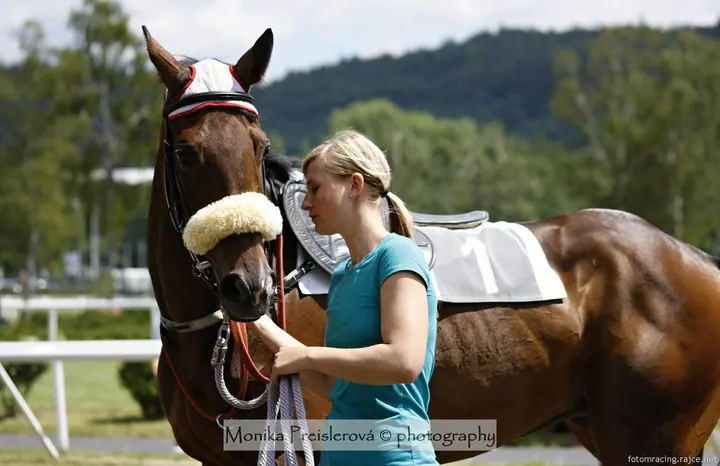
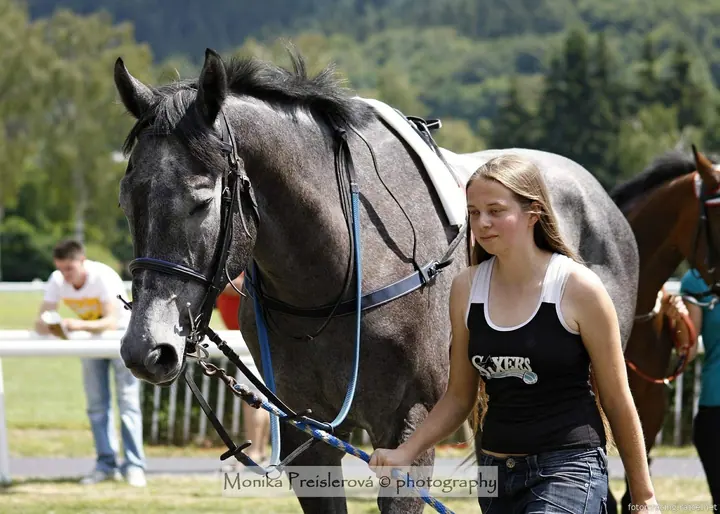
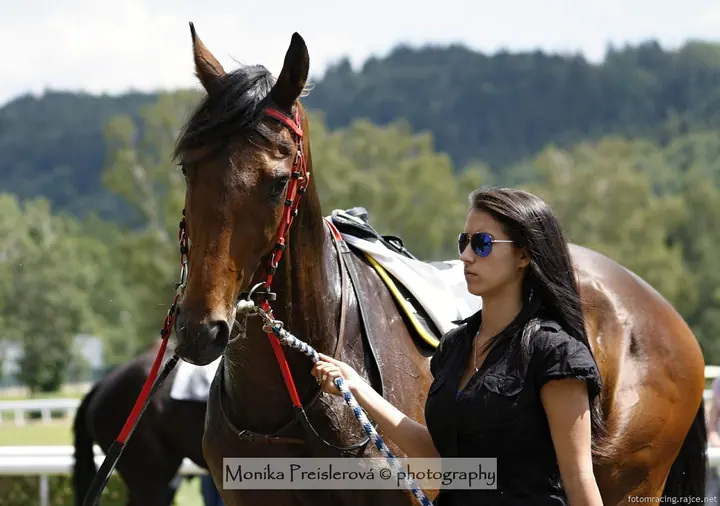
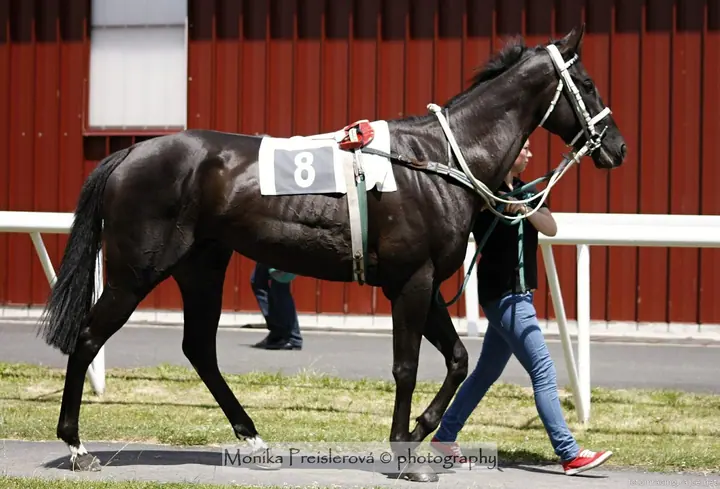
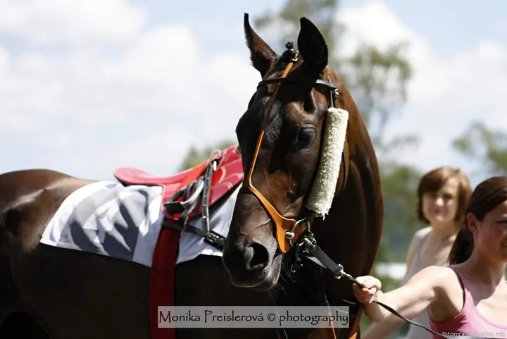
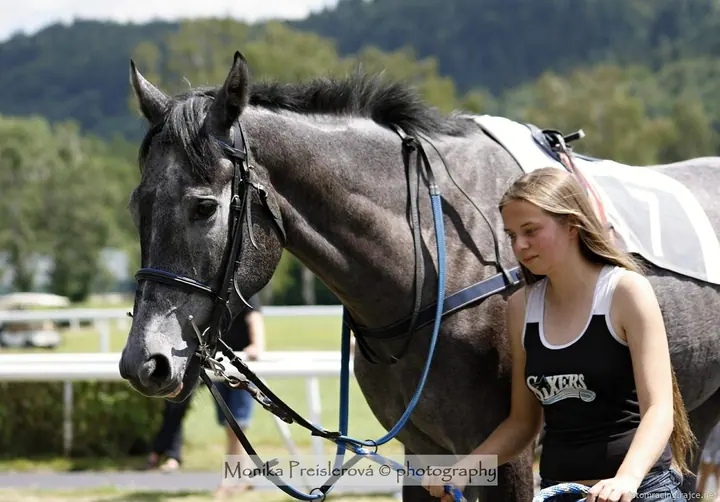
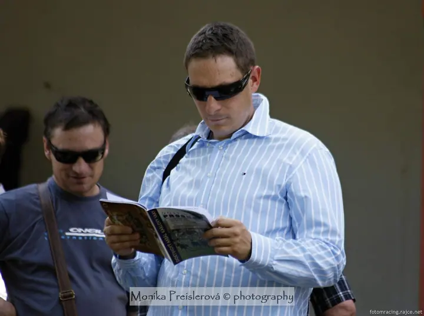

01 / 03
Focení koní
Koně jsou hlavním tématem mých fotek. Ráda nafotím i toho vašeho, na závodech nebo doma ve stáji.
Zeptat se na termín→








Koně, stáje a dostihové dny
Zeptat se na termín →(01) Ahoj
Jmenuji se Monika Preislerová a nejraději fotím koně . Najdete mě na dostihových dnech , parkurových závodech i dalších koňských akcích, kde mě baví i lidé kolem koní .
(02) Co fotím
01 / 03
Koně jsou hlavním tématem mých fotek. Ráda nafotím i toho vašeho, na závodech nebo doma ve stáji.
Zeptat se na termín→02 / 03
Fotím na dostihových dnech, parkurových závodech a dalších koňských akcích. Pokud máte zájem o některou z mých fotografií z akce, napište mi.
Zeptat se na termín→03 / 03
Nafotím vaši stáj, koně i lidi, kteří se o ně starají. Fotky se hodí pro prezentaci stáje i na památku.
Zeptat se na termín→(04) Postup
Od první zprávy po hotovou galerii.
Krok 1 z 4
Pošlete e-mail, o kterou fotografii máte zájem, nebo co byste chtěli nafotit: koně, stáj nebo akci.
Krok 2 z 4
Probereme termín, místo a co je pro vás na fotkách důležité.
Krok 3 z 4
Přijedu za vámi do stáje nebo na akci a fotím v klidu, aby se koně cítili dobře.
Krok 4 z 4
Vybrané a upravené fotky vám předám, abyste je mohli použít na památku nebo pro prezentaci stáje.
Nejvíc mě baví koně a lidé kolem nich.
(05) Za objektivem
Moje fotografie vznikají hlavně v dostihovém prostředí. Fotím v paddocku, na dráze i kolem ní, ale nejvíc mě vždycky zajímají samotní koně.
Kromě dostihů jezdím i na parkurové závody a koňské akce a ráda přijedu nafotit koně a stáje. Na mém albu na Rajčeti je přes osm tisíc fotografií, takže je dost možné, že tam najdete i svého koně.
Pokud se vám některá fotka líbí, nebo byste chtěli nafotit svého koně či stáj, napište mi. Budu jen ráda.
Monika
Monika Preislerová · Fotografka koní a dostihů
Ano. Napište mi, o kterou akci a fotografie jde, a domluvíme se.
Ano, kromě akcí fotím i koně a stáje. Stačí mi napsat a domluvíme termín.
Hlavně dostihové dny, parkurové závody a další koňské akce.
Záleží na tom, co budete chtít nafotit. Napište mi a pošlu vám nabídku přímo pro vás.
(07) Kontakt
Napište pár vět o tom, co si představujete, a termín, který se vám hodí.
fotomracing@seznam.cz